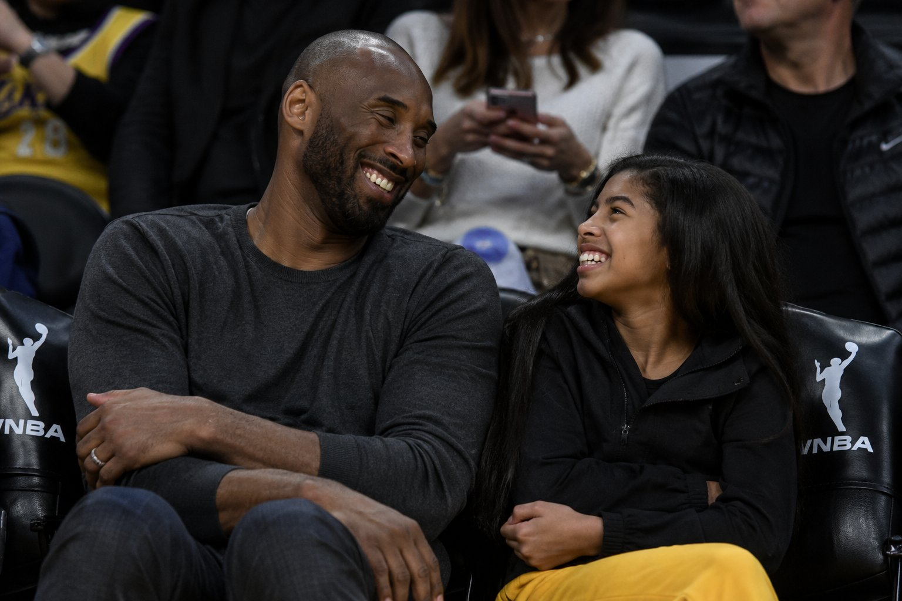
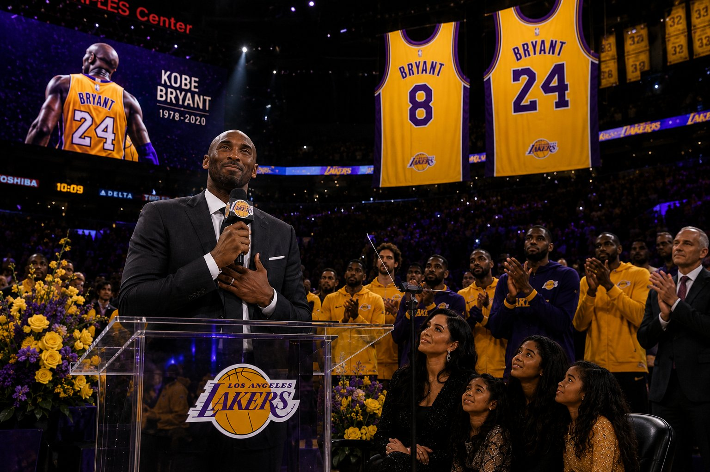
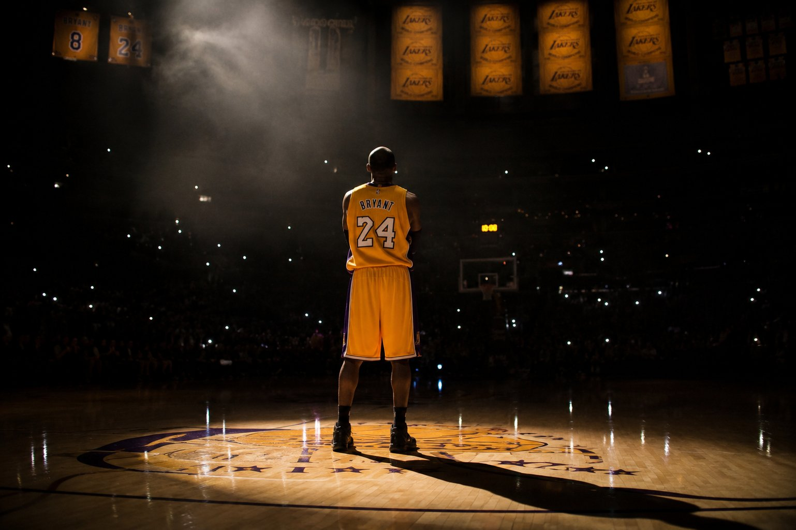
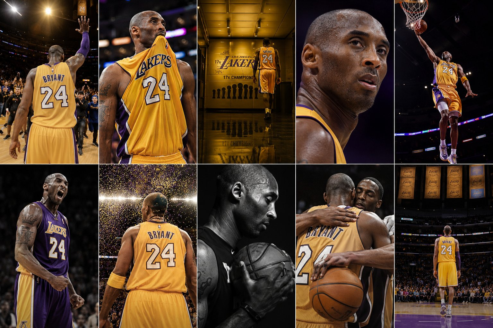

Now &
Forever
How the Black Mamba continues to inspire — long after the final buzzer.
The Morning
That Changed Everything
On a foggy Sunday morning in Calabasas, California, Kobe Bryant, his 13-year-old daughter Gianna, and seven others were killed when their helicopter crashed into a hillside. Dense fog had reduced visibility to near zero. The pilot, likely disoriented, could not recover.
When the news broke, it felt like the entire world held its breath. Then exhaled in grief. Vigils spread from Los Angeles to Lagos. Athletes wept on live television. A generation that had grown up watching #24 could not process what they were hearing.
Kobe was 41. Gianna was 13, already being called the next great player in women's basketball. They were heading together to a youth tournament — a father coaching his daughter, doing what they both loved most.

TEAMMATE
The Next
Mamba
Gianna Maria-Onore Bryant — "Gigi" — was 13 years old and already one of the most promising youth basketball players in the country. Those who watched her practice said she had her father's footwork, her father's eyes, and her father's absolute refusal to be outworked.
Kobe built the Mamba Sports Academy partly for her. He coached her team, the Mamba Ballers, with the same meticulous intensity he brought to twenty seasons in the NBA — studying game film, designing plays, demanding excellence.
People who saw them together at games said it was the most joyful version of Kobe they had ever witnessed. He wasn't the Black Mamba anymore. He was just a proud father, watching his daughter become exactly who he always knew she could be.

& 24
Still Shaping
The World
Basketball Hall of Fame
Inducted into the Naismith Memorial Basketball Hall of Fame in 2020, months after his passing. Vanessa Bryant accepted on his behalf before a standing ovation that lasted four minutes. His daughters sat in the front row. The arena was completely silent between sobs.
#8 and #24 — Both Retired
The Los Angeles Lakers retired both jersey numbers in 2017 — the first player in franchise history to have two numbers hang in the Staples Center rafters simultaneously.
Mamba & Mambacita Foundation
Named after both Kobe and Gianna, the foundation empowers youth athletes — especially young women in basketball. Vanessa Bryant leads every initiative with the same drive Kobe brought to the court.
Media & Storytelling
Documentaries, books, retrospectives and tributes continue to be produced worldwide. Dear Basketball still moves audiences to tears. His philosophy is studied in schools, boardrooms, and training facilities on every continent.
The Mamba Mentality Lives On
In gyms from Manila to Nairobi, from Buenos Aires to Warsaw — young athletes wake up before dawn and choose to embrace the Mamba Mentality. Number 24 jerseys are still sold, still worn, still revered in 2025. His message of relentless effort became a universal language of ambition that outlives any sport, any era, any record. That is what immortality looks like.

LEGEND

— Kobe Bryant"The most important thing is to try and inspire people so that they can be great in whatever they want to do."
Explore
the Legend
Read the full biography, revisit the career highlights, or get in touch to share your own Kobe story.